| 日付 | 2012年6月30日（土） |
|---|---|
| 山域 | 奥秩父 |
| メンバー | 友人（男2女2子供1） |
| 山行形態 | 子連れ日帰り |
| アクセス | 車 |
| ルート (Map) | 瑞牆山荘 (9:43) - (10:19) 富士見小屋 - (11:55) 瑞牆山 (12:55) - (14:50) 富士見小屋 - (15:29) 瑞牆山荘 |
今回は久しぶりに家族と友人とで山に登ることにする。
余りきつくない山に行こうということで、選んだのは瑞牆山。
奥秩父の主稜線から少し外れたところにある山で、標高は2000mを超えているが、
周りの山々が高いため遠くから見ても目立たない。
しかし、山頂付近はいくつもの岩峰がそそり立ち
ひときわ目を引く特異な山容の山である。
瑞牆山荘に到着。標高1515m。
ずいぶんとおしゃれな山荘だ。
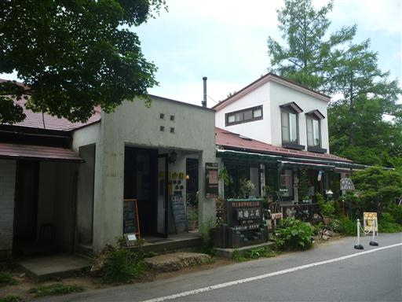
駐車場は大混雑。ここからは瑞牆山の他に金峰山にも登れるが、それにしても車の数が多い。
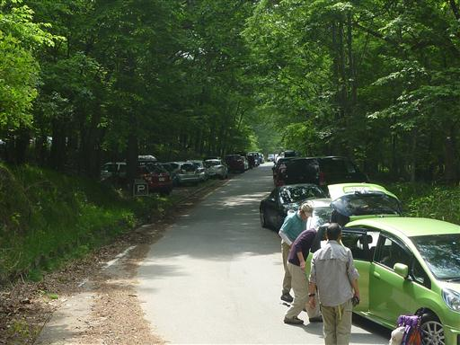
友人の到着を待って、登山を始める。
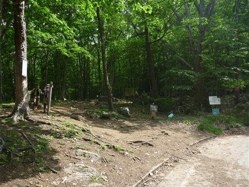
岩山のためか、登山道の脇にも大岩がごろごろしている。
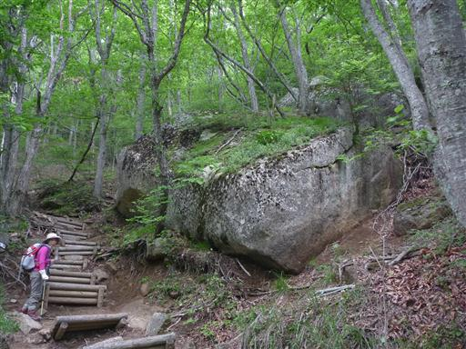
富士見平のミズナラ林。やまなしの森林100選に指定されている。
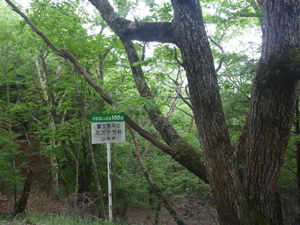
富士見平小屋に到着。レンゲツツジの花が咲いている。
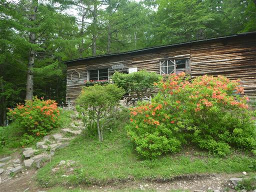
ここにはテント場があり、多くのテントが張られている。
ここを起点に瑞牆山と金峰山に登るのだろうか？
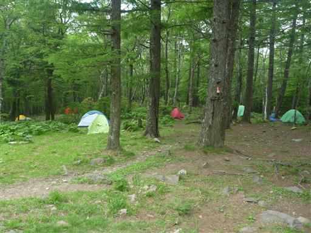
ここからしばらくは登りがなく平坦な道が続く。
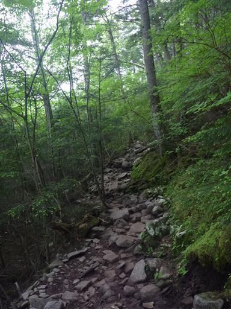
少し下って沢を渡渉する。水場があるので何人かの登山者が休憩している。
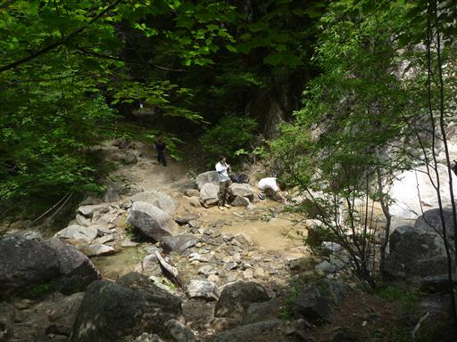
桃太郎岩。大岩が縦に割れている。

桃太郎岩の右にある木段を登っていく。
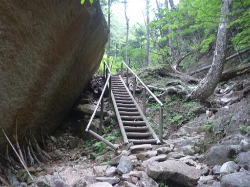
この辺りから登山道は岩場が増えてくる。濡れて滑りやすい岩の上を登っていく。
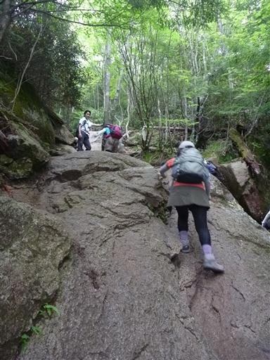
目の前に突き立つ岩峰が見えてきた。大ヤスリ岩だ。
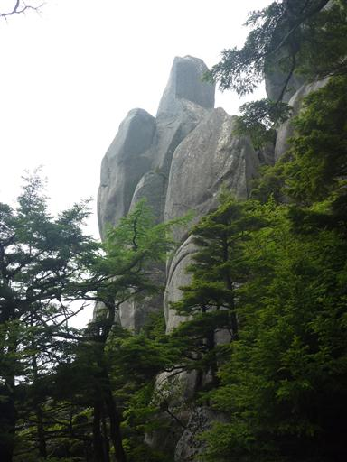
登山道にだんだんと人が増えてきた。
下の駐車場にあれだけ車が停まっていたのだから当然と言えば当然だが…
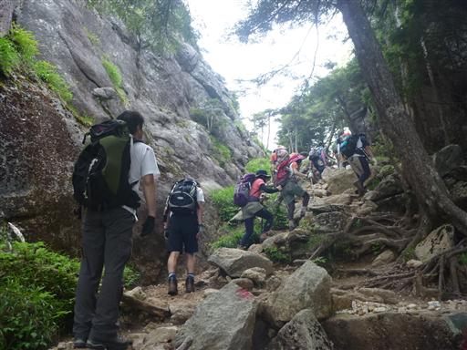
岩場を登る場所ではついに順番待ち。
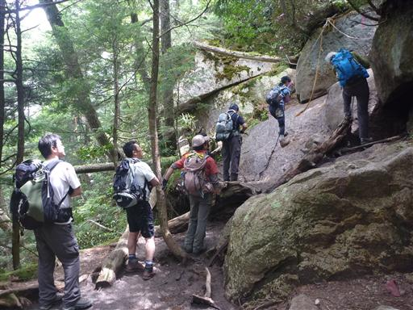
辺りはシャクナゲの花があちらこちらに咲いている。
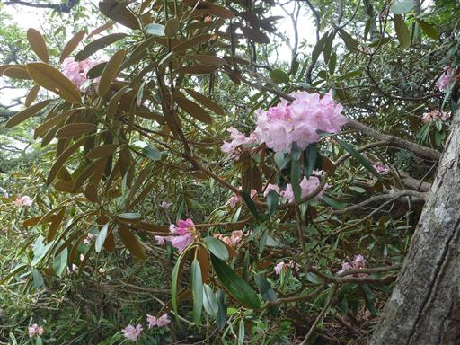
岩場を登るとすぐに瑞牆山山頂に到着する。標高2230m。
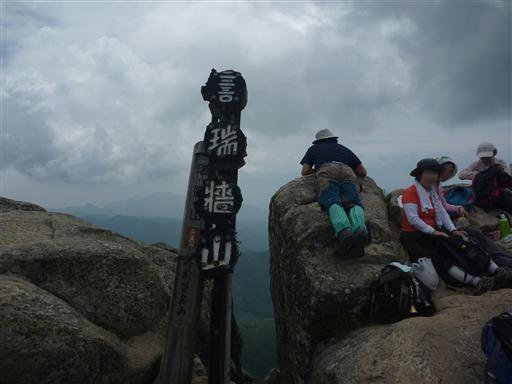
山頂は大混雑で足の踏み場もないほどだ。
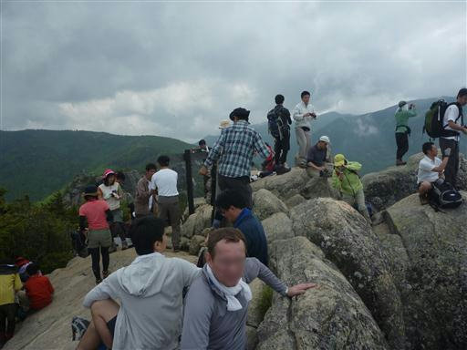
天気はさほど良くないが、山頂からはいくらかの展望が広がる。
眼下には先ほど見上げた大ヤスリ岩が見える。
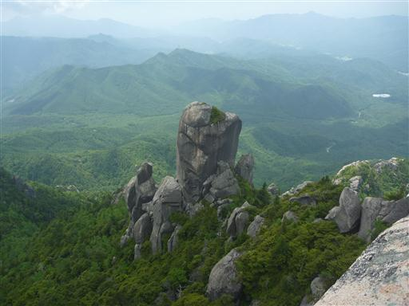
山頂のお隣にある岩峰。人がいるのでこちらのピークにも登れるようだ。
下山時に寄ることにする。
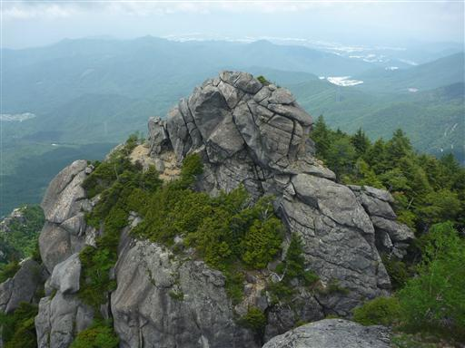
遠く金峰山を望む。かろうじて雲の下に五丈石が見えている。
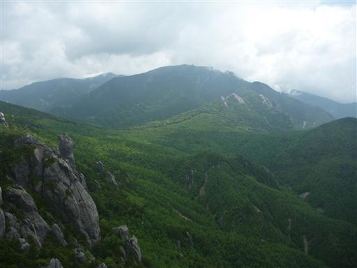
こちらは小川山に続く岩峰が突き立つ尾根。瑞牆山らしい山容だ。
山頂で展望を楽しんだら、すぐ下の樹林帯に腰をおろして昼食タイムだ。
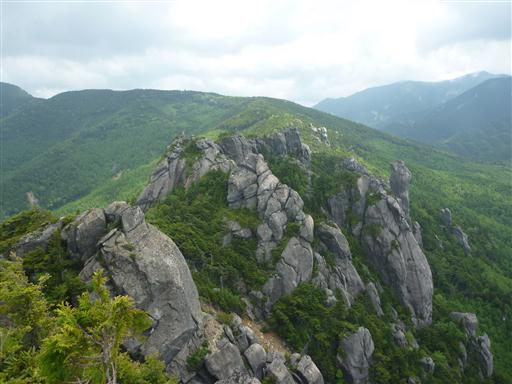
下山時に山頂から見えた隣の岩峰に寄り道する。
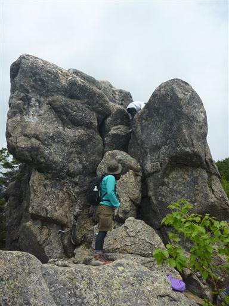
岩の上部は手足をかけるところが少なく、難しくはないが結構怖かった。
とりあえず無事登頂。こちら側は人が少なく静かでよいところだ。
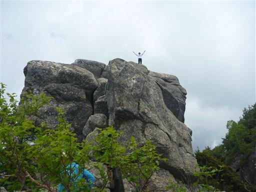
ここから眼下にも白い岩が連なっている。
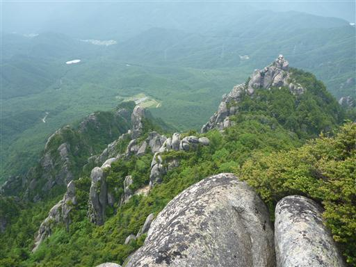
下山時、木の隙間から瑞牆山を望む。
残念ながら瑞牆山の全体像を見渡せる展望ポイントは見つからなかった。
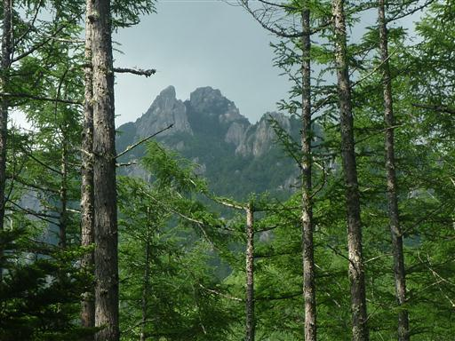
下山後は増富温泉に寄り、温泉と食事をとってから帰ることにする。
瑞牆山は良い山だったが、いかんせん人が多すぎた。
次はもう少し人の少ない山に行ってみようと思う。
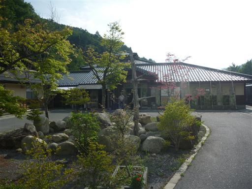